Computational photography / Project 04 / Parts A and B
One point,
many views.
Photos taken by turning a phone in place. Part A registers them with hand-picked homographies, warps them with my own nearest-neighbor and bilinear samplers, and blends them. Part B finds the homographies automatically: Harris corners, MOPS descriptors, ratio-test matching and RANSAC.

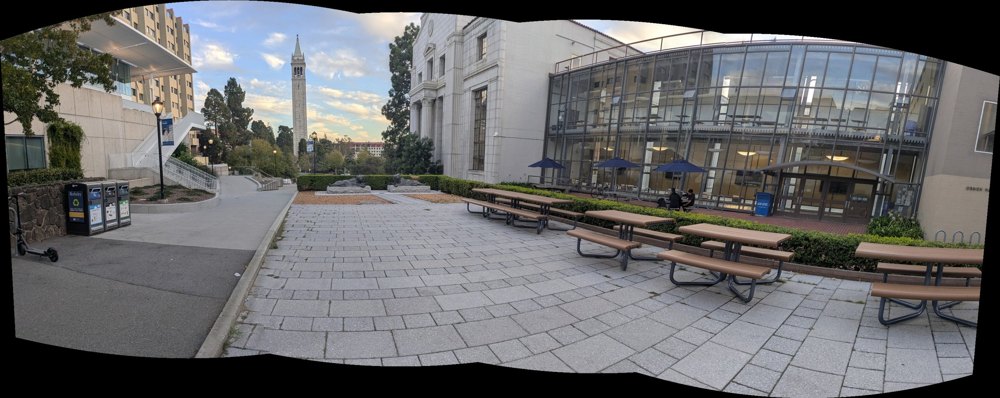
Shoot the pictures
All 51 photos come from a Pixel 7a. The mosaics use the main camera (5.43 mm, 25 mm equivalent, 4624×3472) handheld, turning in place around the lens. I shot full sweeps in three places on Oct 25 evening and used neighbouring frames that overlap by roughly 50–80%.
| Set | Photos used | Turn between frames | Scene |
|---|---|---|---|
| Plaza | 3 (+1 for A.5) | ≈ 31° | Bike racks, Sather Tower, O'Brien Hall |
| Glade | 3 | ≈ 14–24° | Memorial Glade from the terrace balustrade |
| Lobby | 3 | ≈ 18–19° | Dorm entrance, door, sofa, Cal sign |
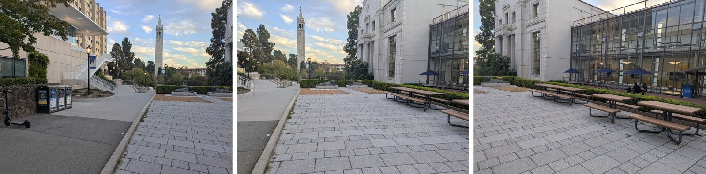
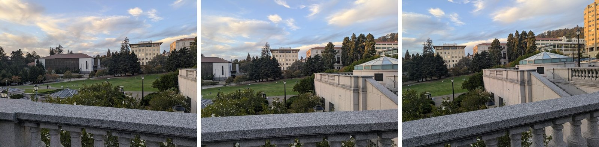
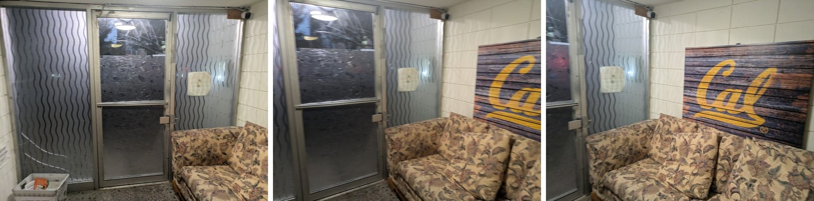
Recover homographies
computeH(im1_pts, im2_pts) solves for the eight unknowns of H, with H33 = 1, by least squares over all correspondences.
Each pair (x, y) → (x′, y′) gives two linear equations, from x′(gx + hy + 1) = ax + by + c and the same for y′:
Stacking n pairs gives a 2n×8 system A h = b, solved with np.linalg.lstsq. Before solving, both point sets are moved to zero mean and scaled to an average distance of √2. This normalization undoes itself afterward and keeps the x′x terms (≈10⁷ px²) from dominating. With exact synthetic data the code recovers H to 10⁻¹³. The first two correspondences of Plaza 2 → 3 give these rows before normalization:
Picking correspondences
Points were picked by hand on gridded 1000-px previews of the first photo. For every pair, 3–4 of them were also matched by eye in the second photo. From those anchors, a camera rotation (using the EXIF focal length) predicts where the other points land. Each point is placed by normalized cross-correlation: the first photo is warped into the second view, and a 41×41 template is searched within ±80 px. Matches with NCC below 0.8 were dropped. I also removed points on nearby lamp posts and lanterns: the phone was handheld, so the center of projection moved slightly, and close objects shift against the background. Residuals are in full-resolution pixels.
| Pair | Points | Turn | RMS px | Max px |
|---|---|---|---|---|
| Plaza 1 → 2 | 10 | 31° | 7.4 | 14.4 |
| Plaza 2 → 3 | 17 | 30° | 12.1 | 19.8 |
| Glade 1 → 2 | 18 | 24° | 4.7 | 12.5 |
| Glade 2 → 3 | 18 | 14° | 5.0 | 11.0 |
| Lobby 1 → 2 | 16 | 18° | 6.0 | 12.0 |
| Lobby 2 → 3 | 13 | 19° | 7.7 | 14.8 |
| Plaza 3 → 4 | 15 | 30° | 12.4 | 22.9 |
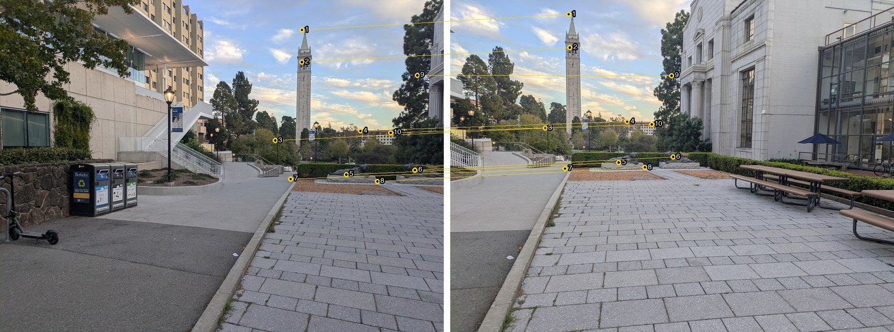
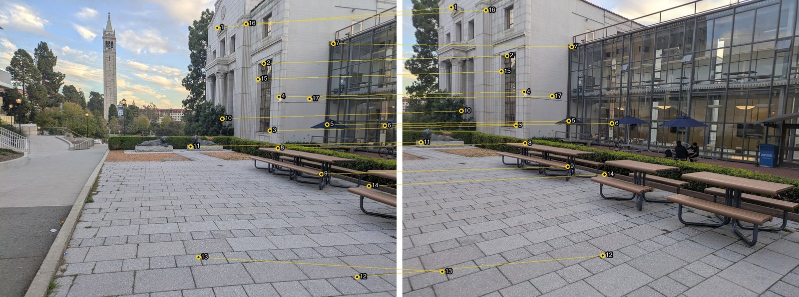
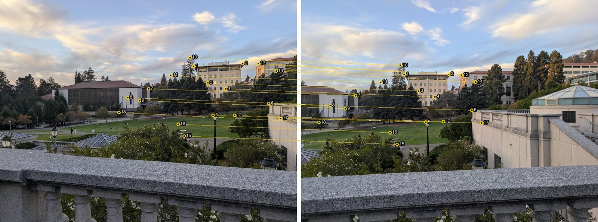
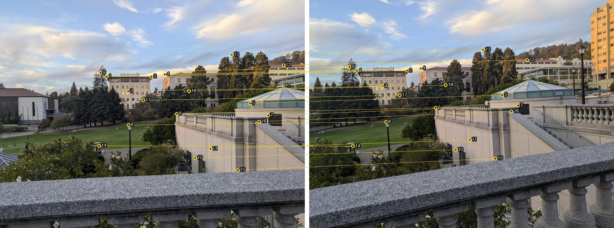
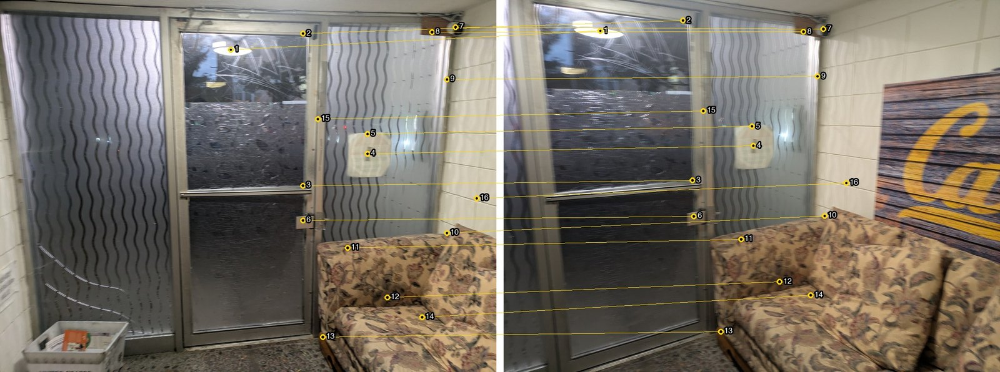
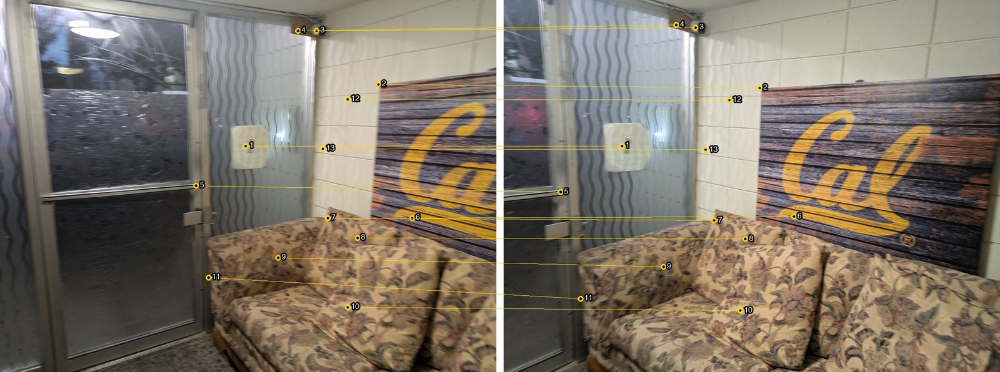
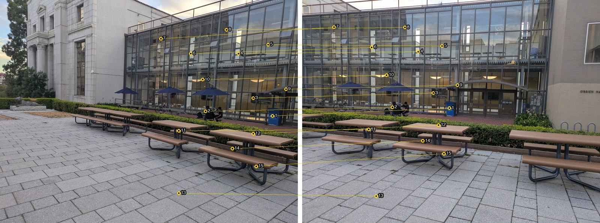
Recovered matrices (full-resolution pixels, image 1 → image 2)
The plaza residuals are larger because these pairs mix paving 2–5 m away with buildings 20–50 m away. The phone moved a few centimeters while turning, which puts these depths a few pixels apart. At the 0.3125× working scale, a 12 px RMS becomes about 4 px.
Warp the images
warpImageNearestNeighbor(im, H) and warpImageBilinear(im, H) both use inverse warping. Every output pixel is sent back through H⁻¹ and read from the source, so the output has no holes.
- The output box is the bounding box of the four source corners mapped by H (or a box given by the caller).
- Pixel centers sit on integer coordinates: (0, 0) is the center of the top-left pixel. For each output row block, the source coordinates (u, v) = H⁻¹(x, y) are computed in one vectorized step.
- Nearest neighbor rounds (u, v). Bilinear takes the four surrounding pixels, weighted by (1−fx)(1−fy), fx(1−fy), (1−fx)fy and fx·fy.
- An alpha mask records which output pixels came from inside the source. The sign of H⁻¹ is fixed so that points in front of the source camera have w > 0.
Rectification: four hand-clicked corners of a known rectangle map to an axis-aligned rectangle. For the windows I did not know the real width/height ratio, so I recovered it: back-projecting the four corners as rays with the EXIF focal length and requiring them to form a parallelogram fixes the 3D rectangle up to scale. Its corner angle (87–89°) is a check on the clicks.
Ground plane
Ultra-wide shot of the plaza in front of McLaughlin Hall. The four corners of one granite square map to a square, so the camera seems to look straight down. All the other squares and the brick bands come out square and parallel too. Target shape: square (1 : 1). The EXIF focal length estimate gives 1.14; this is an ultra-wide photo, so I used the known shape.


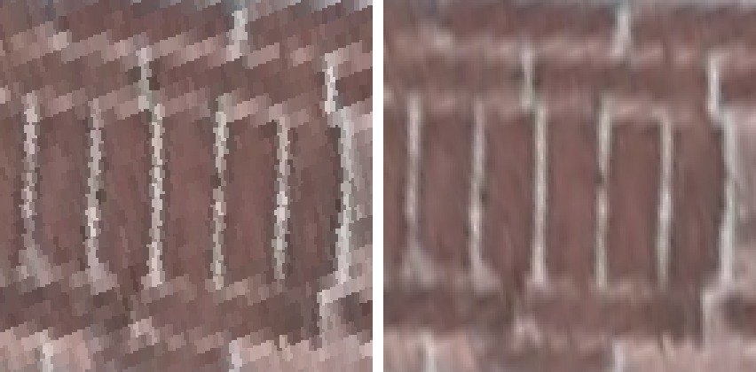
Facade
The inner corners of the lower window panes map to a rectangle. The rest of the grid and the lintel lettering straighten out. Target shape: 1.09 : 1, recovered from the corners and EXIF focal length (corner angle 87.2°).

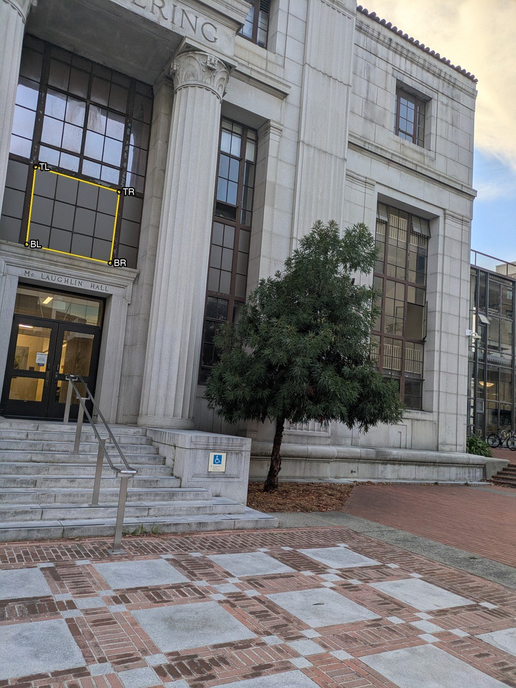

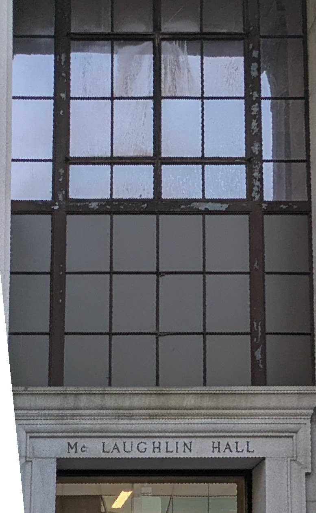

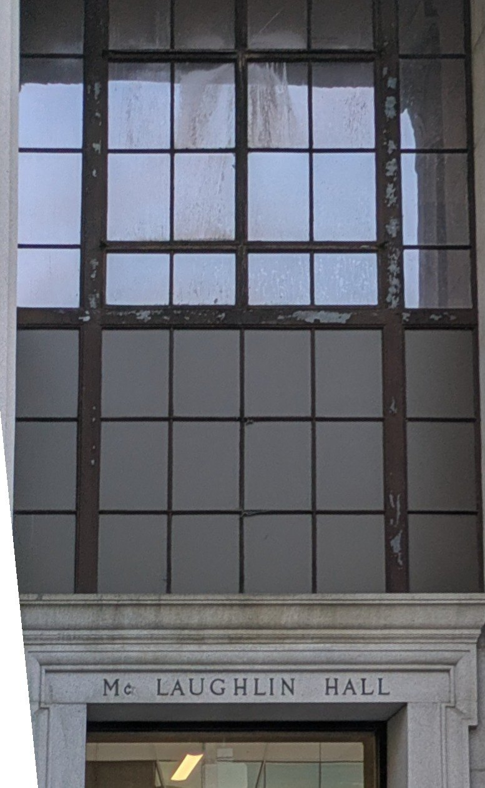
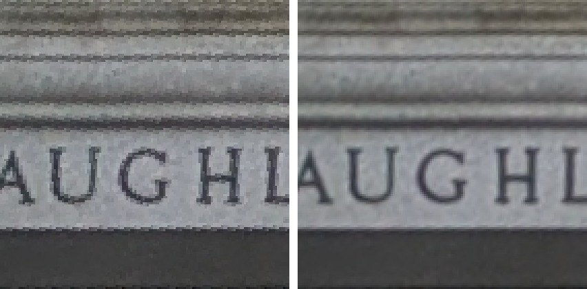
Receding wall
A wall seen at a steep angle. After rectification the lower sash faces the camera, and the next window bay further down the wall appears beside it, heavily magnified. Target shape: 0.87 : 1, recovered from the corners and EXIF focal length (corner angle 89.4°).


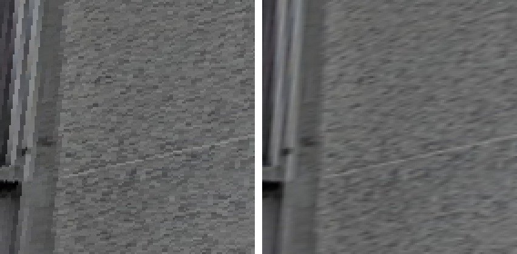
Speed and quality
| Method | Time, 1.40 MP output | What it looks like |
|---|---|---|
| Nearest neighbor | 0.051 s | Staircase edges on mortar lines and lettering; blocky where the source is magnified (far side of the plaza and of the wall) |
| Bilinear | 0.092 s | Smooth edges, slightly softer fine texture |
Times are the median of 5 runs. Bilinear is about 1.8× slower: it reads four pixels and does six multiply-adds per channel instead of one lookup. In absolute terms it is still under 0.1 s per megapixel, so I use bilinear for all mosaics. Nearest neighbor is only worth it for label maps or masks, where averaging values would be wrong.
Blend into mosaics
- The middle photo is the reference. Each other photo gets H into the reference, computed directly from its own correspondences (computeH(points in photo 3, points in photo 2) rather than inverting the reverse fit).
- Photos are loaded at 0.3125× (1445×1085). The homographies are rescaled for that pixel grid, and the canvas is the bounding box of all warped corners.
- Each photo is warped bilinearly together with a weight map that is 1 at its center and falls linearly to 0 at every border. The weight map is warped by the same H, so it follows the photo's shape.
- Two-band blend. The low band is a Gaussian blur (σ = 6 px, computed only inside each photo's mask). It is averaged with the weights, which removes exposure steps. The high band (photo − low band) comes only from the photo with the largest weight at each pixel, so small misalignments do not show up as double edges.


The comparison crops show three versions of each seam. Overwrite has hard exposure edges, because the phone metered each frame separately. Feathering hides those edges but averages misaligned detail into soft double images; look at the Glade rail and the plaza tree line. The two-band blend keeps the smooth exposure transition and single sharp edges.
Campanile plaza
Three photos turning about 31° each from the bike racks past Sather Tower to the glass front of O'Brien Hall. The plane of the middle photo stretches the outer photos by more than 2×. The paving lines run straight across both seams. Canvas 4960×2296 px, built in 5.3 s.
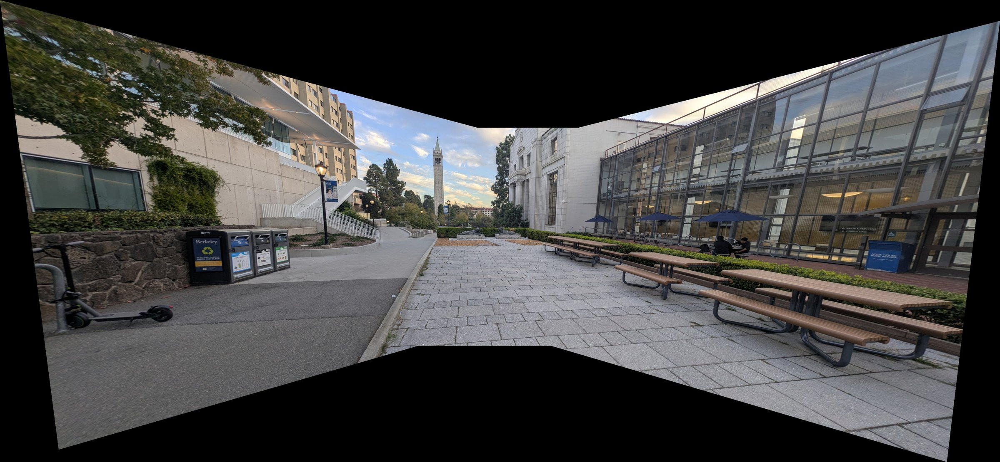
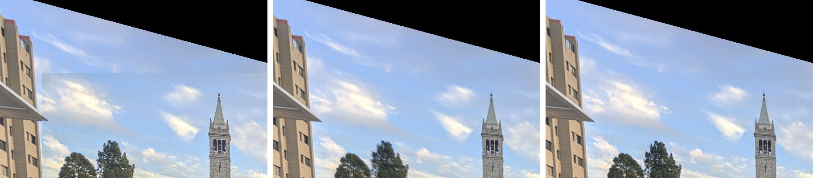
Memorial Glade terrace
Taken from the balustrade above the Glade at sunset. Distant buildings and the terrace line up within a few pixels. The granite rail is only a meter away and shows a small step at the left seam. My phone moved a few centimeters between shots, and one homography cannot align objects at 1 m and 100 m at the same time. Canvas 2947×1699 px, built in 3.4 s.
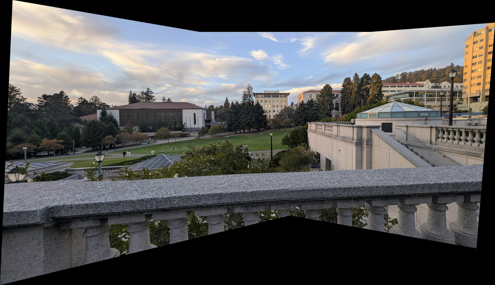
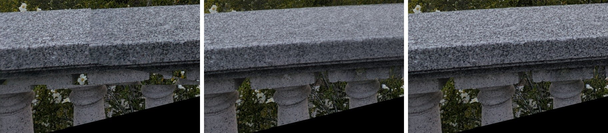
Dorm lobby
An indoor corner at night with longer exposures and slight motion blur. The wavy door film, the door frame and the Cal sign continue across both seams. Canvas 2999×1637 px, built in 2.5 s.
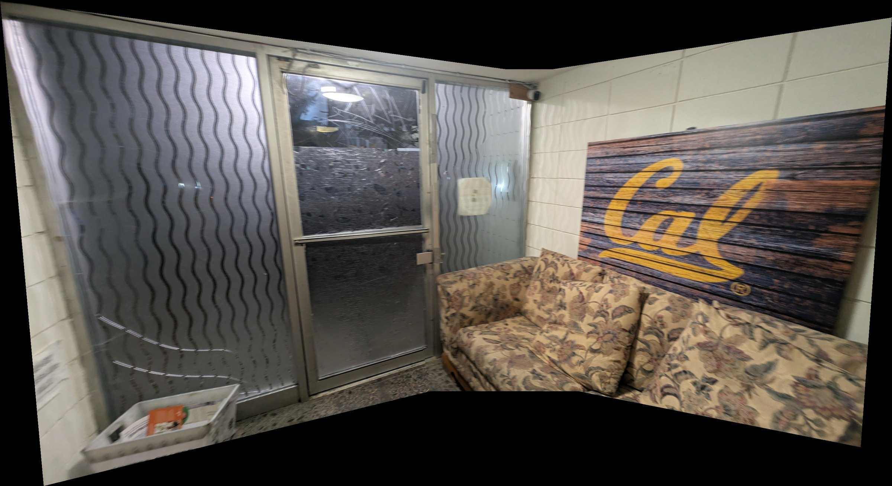
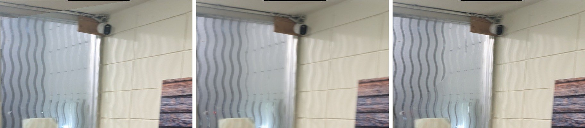
Bells & whistles: cylindrical mapping
The cylinder is sampled directly from the original photos, so each pixel is interpolated once, not resampled from an already-warped planar mosaic.
- An output pixel at angle θ and height h is the ray d = (sin θ, h, cos θ) in the reference camera.
- That ray enters photo i at p = Hi⁻¹ K d, where K uses the EXIF focal length (f = 1044 px at 0.3125×, which is also the cylinder radius). The photo is sampled bilinearly at p.
- Hi⁻¹ is signed so rays in front of camera i have w > 0. Because p is never divided before Hi⁻¹ is applied, this works for rays more than 90° from the reference, where the reference plane no longer exists.
- The θ, h range comes from the photo borders mapped to rays. Weights and two-band blending are the same as in A.4.
| Mosaic | Span | Cylinder px | Plane px |
|---|---|---|---|
| Plaza, 3 photos | 134° | 2449×1143 | 4960×2296 |
| Glade, 3 photos | 108° | 1975×1150 | 2947×1699 |
| Lobby, 3 photos | 110° | 2008×1144 | 2999×1637 |
| Plaza, 4 photos | 168° | 3058×1219 | not possible |
The four-photo plaza covers 168°. Its last photo points 100° away from the reference, so a planar mosaic cannot hold it. On the cylinder, the stretching at the sides is gone: the bike racks and the O'Brien Hall entrance keep their size, and the straight paving edge bends into a curve, as cylindrical maps do.


Part B / Feature matching for autostitching
Harris corners and ANMS
Part B replaces the hand-picked points with the pipeline of Brown, Szeliski and Winder, Multi-Image Matching using Multi-Scale Oriented Patches (MOPS), at a single scale. Everything runs on the 0.3125× working photos (1445×1085, grayscale).
- Corner strength is the harmonic mean of the structure tensor's eigenvalues, f = det M / tr M (MOPS Section 2). The gradients come from a Gaussian with σd = 1 px and are averaged with σi = 1.5 px.
- Corners are 3×3 local maxima of f above 0.1% of its maximum. Points within 20 px of the border are dropped, so every corner has a full 40×40 descriptor window. This leaves 14,499–16,868 corners per photo.
- Adaptive non-maximal suppression (MOPS Section 3). Each corner's radius is the distance to the nearest corner that is clearly stronger, ri = min ‖xi − xj‖ over f(xi) < 0.9 f(xj). I keep the 500 corners with the largest radii. After sorting by strength, only earlier points can be stronger, so the search runs in blocks of 512 against that prefix.
Taking the 500 strongest corners instead puts most of them in the trees and on one high-contrast building edge, with almost none on the paving or walls. ANMS spreads them over the whole frame: no two kept corners are closer than 32 px.
Plaza, middle photo


Glade, middle photo


Lobby, middle photo


Feature descriptors
- The photo is blurred with σ = 1.25 px. Around each ANMS corner, the 40×40 window is averaged over 5×5 blocks, which gives an 8×8 patch sampled every 5 px (MOPS Section 4, without rotation and without the wavelet step).
- The patch is bias/gain-normalized: subtract its mean, divide by its standard deviation. The 64 values form the descriptor.
The 5-px sampling and the blur make the descriptor tolerant to the 1–2 px corner jitter and to the small scale change across a 30° turn. The normalization removes the exposure difference between frames. Below are eight matched features from Plaza 2 → 3, with their locations in both photos.
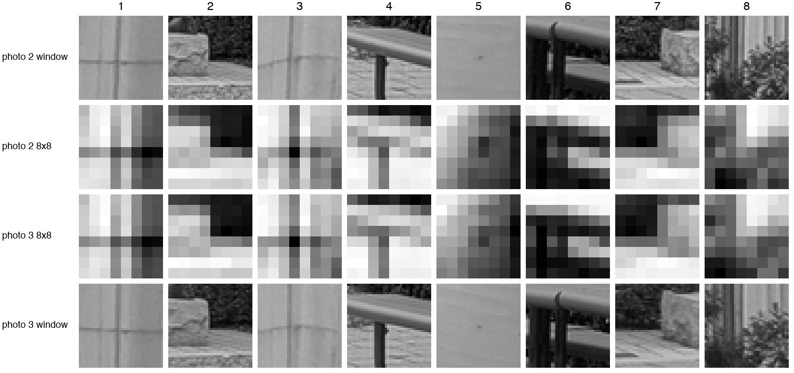
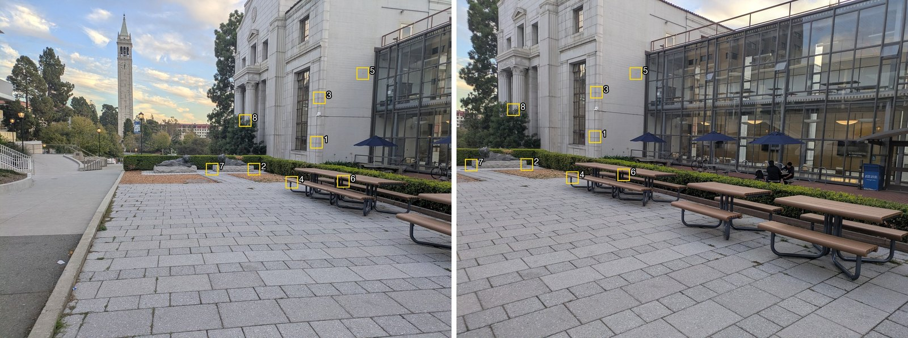
Feature matching
Each descriptor in photo 1 is compared with all 500 descriptors in photo 2 by squared distance (SSD). Following Lowe, a match is kept only if its nearest neighbor is much better than the second nearest: e1-NN / e2-NN < 0.5.
When two features pick the same target, only the one with the lower ratio keeps it. To choose the threshold I redrew Figure 6b of the paper for my own photos. For all 500 features of each of the six pairs, the nearest neighbor counts as correct if the final homography from B.4 maps the feature within 3 px of it. A threshold of 0.5 keeps 438 of 516 correct nearest neighbors (85%) and 248 of 2484 wrong ones (10%). Many of the "wrong" ones that survive are correct matches at a second depth (see B.4), so the true error rate is lower.
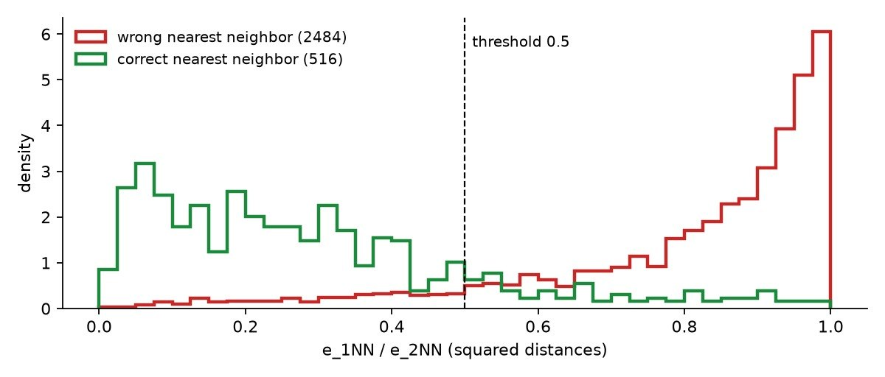
The match figures show every match that passes the ratio test. Green matches are the RANSAC inliers from B.4, and red ones were rejected.
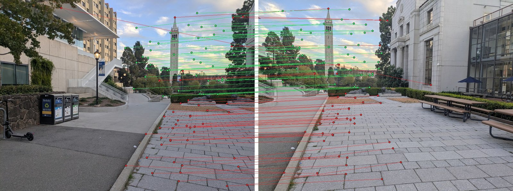
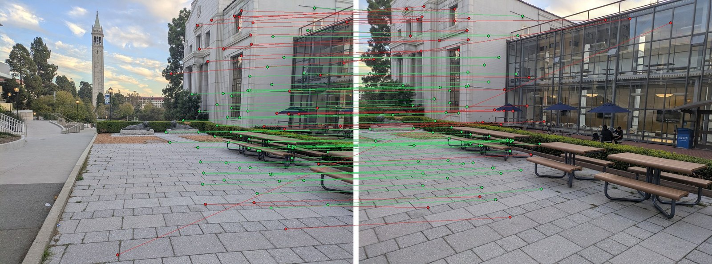
RANSAC and automatic mosaics
- Pick 4 random matches and solve H exactly with
computeHfrom A.2. - Count the inliers: matches that H maps within 3 px of their partner (working scale, 9.6 px at full resolution). Keep the largest inlier set.
- Run N = log(1 − 0.999) / log(1 − w⁴) rounds, where w is the best inlier fraction so far, with at least 500 rounds. The random generator is seeded, so results are reproducible.
- Refit H by least squares on all inliers, recount the inliers with that H, and refit once more. The final H is fit in full-resolution pixels so that it can be compared with Part A.
- Chain the pair homographies into the middle photo and reuse the A.4 warp and two-band blend unchanged.
| Pair | Matches | Inliers | Rounds | Inlier RMS | Manual H, hand points | Auto H, hand points |
|---|---|---|---|---|---|---|
| Plaza 1 → 2 | 88 | 44 | 500 | 4.2 | 7.4 | 14.8 |
| Plaza 2 → 3 | 85 | 55 | 500 | 5.1 | 12.1 | 17.7 |
| Glade 1 → 2 | 113 | 87 | 500 | 3.5 | 4.7 | 5.8 |
| Glade 2 → 3 | 171 | 140 | 500 | 5.0 | 5.0 | 5.3 |
| Lobby 1 → 2 | 74 | 44 | 500 | 4.8 | 6.0 | 6.5 |
| Lobby 2 → 3 | 130 | 63 | 500 | 5.6 | 7.7 | 16.8 |
All RMS values are in full-resolution pixels. The last two columns apply both homographies to the hand-picked points from A.2. The automatic H fits its own inliers to 3.5–5.6 px. It does worse on the hand-picked points in the plaza and in Lobby 2 → 3 because of parallax. The phone moved a few centimeters between shots, so the paving 2–5 m away and the buildings 30 m away need slightly different homographies. My hand-picked points mix both depths. RANSAC keeps the larger consistent group and rejects the other one as outliers. In Plaza 1 → 2, 35 of the 44 rejected matches agree with one other homography: the paving in the lower half of the frame. In Plaza 2 → 3, the paving won and the far scene was rejected. The red matches in those figures are therefore mostly correct matches at the other depth, not noise.
Campanile plaza
The largest change from Part A: the left photo is aligned on the far scene and the right photo on the paving, because RANSAC picked a different depth for each pair. Both seams still line up where the blend switches photos.


Memorial Glade terrace
The distant buildings dominate the matches, so the automatic and hand-picked homographies are almost the same (5.3–5.8 px against 4.7–5.0 px on the hand-picked points).


Dorm lobby
Indoors, the matches spread over the door film, the wall tiles and the sofa. Both seams look the same in the two versions.


The automatic mosaics need no clicking at all. The full Part B run (corners, descriptors, matching and RANSAC for six pairs, then three mosaics) takes about 30 s. Where one depth dominates, as in the Glade, they match the manual result. Where two depths compete, they commit to one, while my hand-picked points compromised between them.
Bells & whistles: panorama recognition
Given an unordered set of photos, find which ones belong to the same panorama, then stitch each panorama without being told the order or the reference photo.
The input is the nine mosaic photos plus three unrelated photos from the same walk (the rectification photos from A.3), in a fixed shuffled order. Photos 3 and 11 even show the same building, but from different positions and with different lenses.
- Run B.1–B.4 on every pair of photos (66 pairs, at most 2000 RANSAC rounds each).
- Accept a pair when the inliers pass the test of Brown and Lowe (IJCV 2007): ninliers > 8 + 0.3 · nmatches. Random matches rarely agree on one homography, so false pairs fail this test by a wide margin.
- The connected components of the accepted pairs are the panoramas. Photos without an accepted pair are left out.
- In each panorama, the photo with the most inliers in total becomes the reference. The others are chained to it along the maximum spanning tree of inlier counts, then sorted left to right by where their centers land. The warp and blend are the same as in A.4.

| Pair | Matches | Inliers | 8 + 0.3 n | Result |
|---|---|---|---|---|
| 1 – 5 | 55 | 36 | 24.5 | accepted |
| 1 – 10 | 169 | 134 | 58.7 | accepted |
| 2 – 6 | 130 | 63 | 47.0 | accepted |
| 2 – 9 | 70 | 40 | 29.0 | accepted |
| 4 – 12 | 88 | 44 | 34.4 | accepted |
| 5 – 10 | 113 | 87 | 41.9 | accepted |
| 8 – 12 | 94 | 58 | 36.2 | accepted |
| 4 – 8 | 21 | 8 | 14.3 | rejected |
| 6 – 9 | 34 | 12 | 18.2 | rejected |
The test accepts exactly the 7 overlapping pairs, including Glade photos 5 and 1, which are 37° apart and share a narrow strip. The two closest rejections are the outer Plaza photos (4 and 8, 61° apart, with almost no overlap) and the outer Lobby photos (6 and 9). Photos 3, 7 and 11 join nothing. The three panoramas are found with the same reference photos I chose by hand in Part A.
Extra: full circles from every photo
Parts A and B use three photos per mosaic, because on a plane the stretching grows quickly with angle and nothing 90° or more from the center fits at all. I shot a full sweep at each place, and automatic matching makes it easy to use every photo. On a cylinder, the 16 Glade photos and the 12 Plaza photos each close into a 360° panorama.
- Each photo is matched with the next one, and the last photo with the first, using B.1–B.4. Every pair matched without help.
- Chaining 11–15 homographies would let projective errors pile up. Instead, the RANSAC inliers of each pair give only the camera rotation: the points become rays through the EXIF focal length, and a Kabsch fit finds the rotation between the two sets of rays. The steps are 11–40°.
- Loop closure. The steps add up to 364.0° (Glade) and 360.4° (Plaza), so after a full circle the chained rotation misses the first photo by 2.7° and 3.4°. That error is spread evenly over the photos, so the circle closes.
- Straightening, as in Brown and Lowe (2007): when the camera turns about a vertical axis, every camera x-axis is horizontal, so the vertical is the direction perpendicular to all of them. My phone was tilted 5–6° down. Without this step, the horizon would wave up and down around the circle.
- Rendering uses the A.5 cylinder sampler with H = K RT K⁻¹ for each photo. One change was needed: for photos that face more than 90° away from the first one, the sign of H now comes from the rotation instead of from the photo center.
| Sweep | Photos | Inliers per pair | Sum of turns | Loop error | Tilt | Size px |
|---|---|---|---|---|---|---|
| Memorial Glade terrace | 16 | 33–140 | 364.0° | 2.7° | 5.8° | 4196×648 |
| Campanile plaza | 12 | 18–86 | 360.4° | 3.4° | 5.1° | 4199×643 |
The images are cropped to the rows that every direction covers. Distant buildings line up all the way around. Small steps remain on things a meter or two from the phone, such as the Glade balustrade and the Plaza paving: one rotation per photo cannot remove parallax from a handheld sweep.
Notes
Everything is NumPy, with SciPy only for Gaussian blurs and local maxima, Pillow for file input/output, and Matplotlib for the histogram. No OpenCV or scikit-image feature, matching, RANSAC, homography or warping functions are used. python code/main.py regenerates every figure in about 3 minutes on a laptop. The Part A correspondences live in data/points/, and code/pick_points.py re-clicks any pair with matplotlib's ginput.
AI assistance was used to write this webpage. The photos are mine.
I used Claude (AI) to implement Part B and the 360° extra (features.py, ransac.py, automosaic.py, panorama.py, panorama360.py, partb.py) and to write those sections of this page.